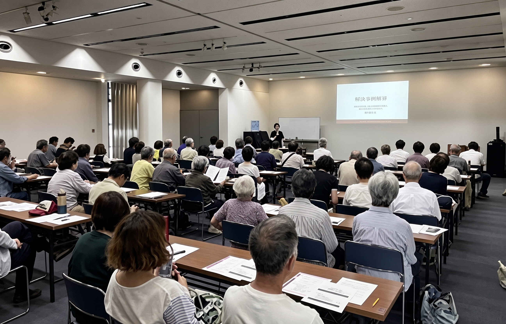

人生の最期まで安心して暮らせる町へ
葉山町の2026年9月1日現在の人口は31,208人です。町の年齢別人口を合計すると、 65歳以上は10,021人で、人口の約32.1％を占めます [1]。およそ3人に1人が65歳以上という 町の姿を踏まえ、医療や介護だけでなく、生きがい、人とのつながり、将来への備えを 一緒に考えたいと思います。
出典：葉山町 年齢別人口（2026年9月1日現在）[1]
年齢を重ねたからといって、誰もが支えられる側になるわけではありません。仕事で培った技術、 子育ての経験、スポーツや文化活動への情熱を、地域で生かしていただくことも大切です。 シルバー人材センターや地域団体との連携を通じて、働く、教える、楽しむ、支え合うといった、 さまざまな参加の機会を広げたいと考えています。

葉山町の2026年度予算には、終活の普及を目的としたセミナーを開催する「終活サポート事業」が 位置付けられています[2]。私は、こうした 取り組みを土台に、学んだ後の相談や準備につながる支援を充実させたいと考えています。
特に、一人暮らしの方や、身近に頼れる人がいない方が、入院、住まい、財産管理、葬送などに ついて、どこに相談すればよいか分かる仕組みを目指します。家族信託などについて専門家から 学ぶ機会や、自分の希望を整理する機会も検討します。相談の件数だけでなく、必要な支援先に つながったかを確かめることを大切にします。
また、大切な人が葉山で生きた証を、穏やかに振り返れるメモリアルのあり方も考えたいと 思います。場所の管理や地域の理解、多様な価値観への配慮を前提に、希望する方の声を 聞きながら検討します。
ペットと暮らす方についても、飼い主に万一のことがあったときの備えや、最期のお別れまで 目を向けます。人生の最期まで安心できることが、今日を自分らしく生きる力になる。 そのような町を目指します。
曲田 和史 KAZUFUMI KYOKUTA